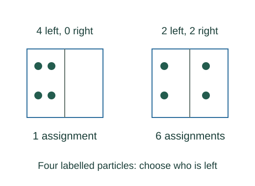

Derive multiplicity and the logarithmic entropy form
Selecting n₁ particle labels from N is a binomial choice. Permutations within either region do not produce a new occupancy assignment.
What the symbols mean
W: number of allowed equal-probability microstates in a macrostate; N = n₁ + n₂: labelled particle count in a two-region counting model.
When this applies
Classical independent counting with equal accessible-state weights. Entropy additivity and monotonicity determine a logarithm up to its constant, fixed to kB by thermodynamic calibration.
Developing the argument

Choose which labels occupy the first region
Selecting n₁ particle labels from N is a binomial choice. Permutations within either region do not produce a new occupancy assignment.
Combine independent systems
Every state of A can pair with every state of B, so multiplicities multiply. Thermodynamic entropy is additive for independent systems.
Solve the additivity requirement
A continuous increasing function with g(xy) = g(x) + g(y) has logarithmic form: set x = exp u and obtain an additive continuous function of u.
Fix the physical scale
Matching this statistical construction to reversible heat transfer on the absolute-temperature scale fixes C = kB. Equal a priori probabilities and the match to thermodynamics remain physical inputs.
A closer lookWhy does thermodynamic entropy use reversible heat over temperature? ↗A worked example
For four labelled particles with two in each half, W = 4!/(2!2!) = 6; placing all in one specified half gives W = 1.
Derivation behind this calculation ↗A point to keep straight
This simple position-counting model does not replace quantum indistinguishability or a complete phase-space entropy calculation.
Check the assumptions and derivation ↗